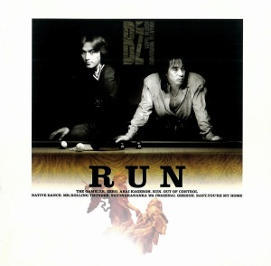
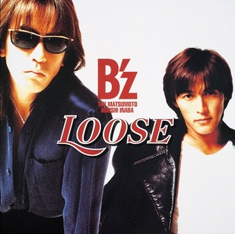

Upon release, IN THE LIFE proved to solidify the band's popularity for the entire decade. Representing a three times increase in sales over previous studio effort RISKY, the album debuted at the top of the Weekly Oricon Albums chart and remained there for two consecutive weeks despite a competitive release window. The first week alone brought sales of over one million copies. Additionally, with only a month on the market, it nonetheless ranked as the second best-selling album of the year in Japan. Strong sales propelled it into the top one-hundred albums for the following year as well. With regard to lifetime sales, it is the second best-selling studio album in the band's catalogue, behind only 1995's LOOSE.
RUN (1992)

THE GAMBLER
ZERO
紅い陽炎
RUN
Out Of Control
NATIVE DANCE
MR. ROLLING THUNDER
さよならなんかは言わせない
月光
Baby, you're my home
RUN is the sixth studio album by B'z, released on October 28, 1992. The album is one of many for the band to not just launch at number one, but to also sell in excess of 1,000,000 copies in only its first week on shelves. When it made its way to the public, RUN served to showcase even more that B'z was a rock band above all else. Continuing on from the hard rock sound sampled well in the previous album IN THE LIFE, much of the sound here would shape the image of B'z for years to come. The album was supported by B'z LIVE-GYM '93 "RUN" and is one of the few B'z albums from which every song has been played live. Several of the songs found on the album, including the sole single, "ZERO", have become staples of B'z live shows over the years and remain beloved by fans.
The titular track "RUN" has been performed live at almost every Pleasure LIVE-GYM since its release, including the 15th anniversary tour in 2003 and the 20th anniversary tour in 2008, and has typically been used to close out shows with a positive and inspirational message. The song was also voted onto the fan-selected best-of collection B'z The Best "Treasure" in 1998, where it was re-recorded in contemporary rock form to showcase the band's growth and labeled "1998 style", as well as B'z The Best "ULTRA Treasure" ten years later in 2008.
Many of the album songs went on to become beloved fan-favorites, including the up-tempo rock number "Out Of Control", which was revived after fourteen years of not being performed live for SHOWCASE 2007 -19-. "NATIVE DANCE" has been included in four Pleasure setlists since its release, including GLORY DAYS and ENDLESS SUMMER. "Sayonara Nanka wa Iwasenai" (Don't Say the Word Goodbye) was used to close out the album's LIVE-GYM as well as that of Pleasure'93. It, along with fellow album track "Gekkou" and the aforementioned "RUN", was voted onto the band's second 20th anniversary album B'z The Best "ULTRA Treasure". In addition, "Gekkou" was also previously included on The Ballads ~Love & B'z~ in 2002.
Uniquely, almost all of the songs from the album became the subject of English demos. None of these versions were ever officially released and remain accessible to fans only in leaked form. Judging by the demos available, the only songs to not receive English renditions were "THE GAMBLER", "Akai Kagerou", and "Sayonara Nanka wa Iwasenai".
In addition to debuting at the top of the Weekly Oricon Album chart with 1,190,380 copies sold in the week of release, RUN remains one of the band's most popular studio albums. In addition to finishing number six for the year of 1992, it remained popular well into 1993 and finished number 23 on that year's chart. RUN has continued to sell and was in time certified Double Million by the Recording Industry Association of Japan with over 2,196,660 in physical copies sold. In 2018, the album was reissued as a two vinyl set made available to visitors of their thirtieth anniversary public exhibition entitled "SCENES" alongside all other studio albums to that point.
LOOSE (1995)

spirit loose
The Loose
ねがい ("BUZZ!" STYLE)
夢見が丘
BAD COMMUNICATION (000-18)
消えない虹
love me, I love you (with G-Bass)
LOVE PHANTOM
敵がいなけりゃ
砂の花びら
キレイな愛じゃなくても
BIG
drive to MY WORLD
spirit loose II
LOOSE is the eighth studio album by B'z, released on November 22nd, 1995.
LOOSE debuted at the top of the Weekly Oricon Album chart with 1,336,150 in first week sales—the most of any of the band's studio albums to date. It would also prove the third highest-selling for the entire year of 1995. Later, the album would be certified Triple Million by the Recording Industry Association of Japan, with sales exceeding 3,003,210 physical copies sold. This made it the band's highest-selling studio album. Overall, LOOSE is their third best-selling release of any sort, behind only 1998's compilations B'z The Best "Pleasure" and B'z The Best "Treasure". In 2018, the album was reissued as a two vinyl set made available to visitors of their thirtieth anniversary public exhibition entitled "SCENES" alongside all other studio albums to that point.